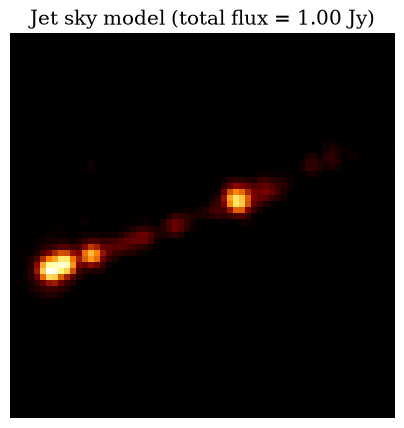
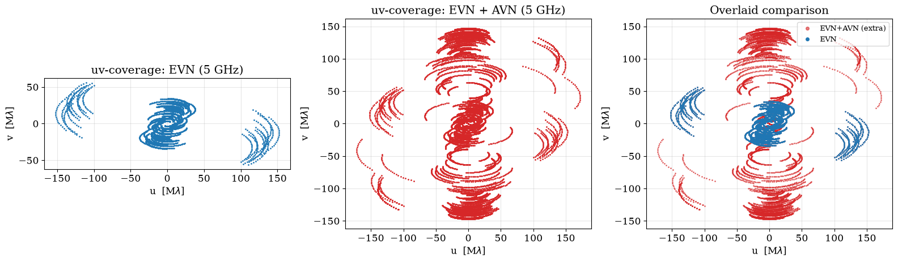
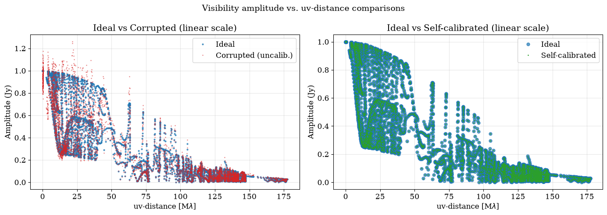
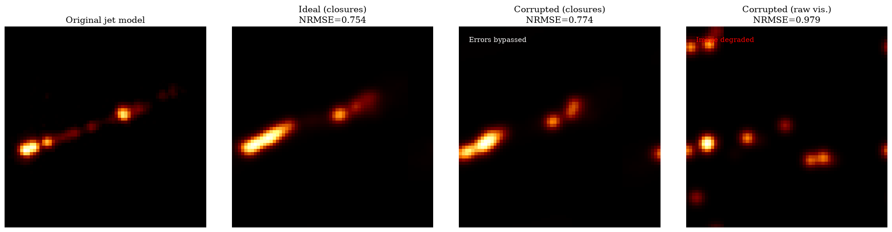
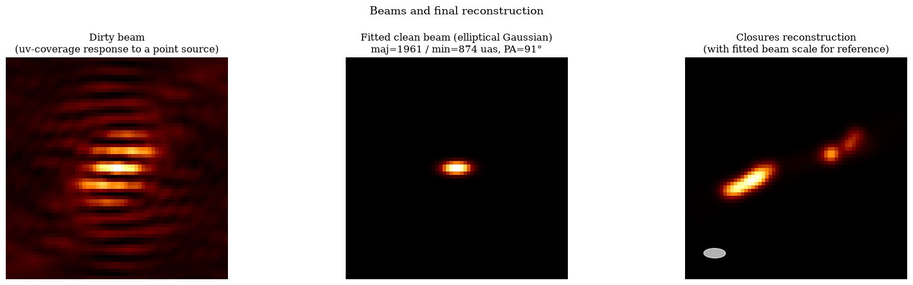
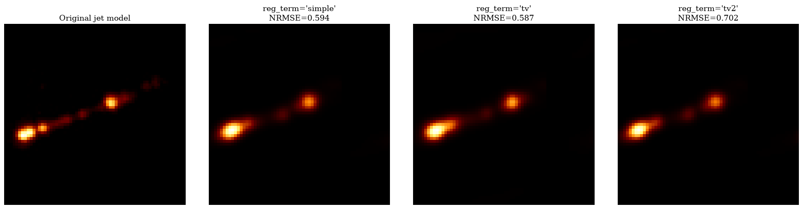
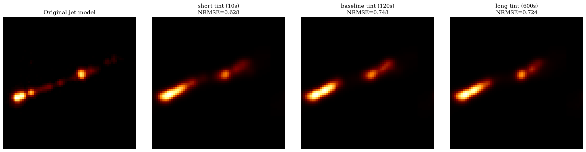

New generation imaging algorithms Hands-On with eht-imaging
EVN + AVN: simulation, calibration, and imaging in Very Long Baseline Interferometry. This tutorial covers a single, end-to-end case study: a realistic relativistic jet, observed with the EVN and with EVN+AVN.
0. Environment setup & Requirements
Before simulating anything, we install/load ehtim and the standard libraries.
jet_model.txt— jet sky model in ehtim text format. Without this file the tutorial falls back to a point source.ehtim 1.2.10installed in your Python environment.
Important note on the Fourier engine (ttype): Throughout this tutorial we explicitly setttype='fast'or'direct'in every call to.observe()and to the Imager, avoiding any dependency on NFFT.
Table of contents
1. Array configuration: EVN vs. EVN+AVN
We define two antenna arrays:
- EVN: 11 real European/Asian stations, with their geocentric coordinates and their SEFD (System Equivalent Flux Density).
- EVN + AVN: the EVN combined with stations from the African VLBI Network (AVN). Adding African baselines substantially improves uv-coverage in the north-south direction.
# Load the arrays from the text files
array_evn = eh.array.load_txt('data/evn_array.txt')
array_comb = eh.array.load_txt('data/combined_array.txt')
print(f"EVN loaded: {len(array_evn.tarr)} stations")
print(f"EVN + AVN loaded: {len(array_comb.tarr)} stations")2. Sky model and the ideal observation
Our science case for this whole notebook is a realistic relativistic jet. We load it from a text-format model (jet_model.txt).

Figure 1: Jet sky model (total flux = 1.00 Jy) displayed with afmhot colormap.
Observing parameters (C-band, 5 GHz)
We choose 5 GHz because it's a standard, realistic band for the EVN (C-band). We simulate the jet first under ideal conditions (no errors), our error-free reference for everything that follows.
| Parameter | Value | Physical meaning |
|---|---|---|
nu | 5 GHz | Observing frequency ($\lambda \approx 6$ cm) |
bw | 1 GHz | Bandwidth |
tint | 120 s | Integration time per scan |
tadv | 600 s | Time advance between scans |
tstart / tstop | 6 – 12 h GST | Observing window |
# Simulating IDEAL observation (no errors)
obs_jet_ideal = im_jet.observe(
array_comb, tint, tadv, tstart, tstop, bw,
sgrscat=False, ampcal=True, phasecal=True, ttype='fast', add_th_noise=False
)
obs_jet_ideal.rf = nu
obs_jet_ideal.add_all(avg_time=avg_time)Visualizing the uv-coverage
To see what the AVN actually contributes, we also simulate the same ideal jet observation on EVN alone, purely for this comparison plot.

Figure 2: uv-coverage comparison between EVN (blue) and the combined EVN+AVN array (red). Notice how many NEW points the AVN contributes, especially in the north-south direction.
3. Realistic errors, self-calibration, and visibility corruption
Real observations are affected by thermal noise, gain errors, phase drifts, etc. We inject these errors into our jet simulation and quantify the resulting degradation.
# CONTROLS TO EXPERIMENT WITH
gain_offset_val = 0.15 # Systematic amplitude gain error (e.g. 0.15 = 15%)
gainp_val = 0.10 # Random amplitude gain error (per antenna)
elevation_min = 10.0 # Minimum observing elevation [degrees]
obs_jet_err = im_jet.observe(
array_comb, tint, tadv, tstart, tstop, bw,
sgrscat=False, ttype='fast', elevmin=elevation_min,
add_th_noise=True, # thermal noise
ampcal=False, gain_offset=gain_offset_val, gainp=gainp_val, # amplitude errors
phasecal=False # phase errors
)Self-calibration
Self-calibration uses a model of the source to solve for the per-antenna gains that best explain the observed data, and applies them to correct the visibilities.
obs_jet_err.add_scans() # essential for scan_solutions to group correctly
cal_jet = sc.self_cal(obs_jet_err, im_jet, ttype='fast', scan_solutions=True, processes=1)Visualizing the degradation: visibility amplitude vs. uv-distance
This is the single most-used diagnostic plot in the entire VLBI workflow. For a source with extended structure (like our jet), the amplitude falls off and oscillates in a pattern set by the source's morphology.

Figure 3: 'Ideal' shows the true source structure; 'Corrupted' shows the scatter introduced by errors; 'Self-calibrated' shows how much is recovered. The drop in amplitude at longer baselines represents resolved-out flux.
4. RML imaging: closures vs. raw visibilities
What is a "closure quantity"?
In real VLBI, every antenna has its own clock and atmosphere, introducing phase and amplitude errors. The visibility you actually measure on baseline $i$–$j$ is:
$$r_{ij} = \gamma_i \, \gamma_j^{*} \, V_{ij}$$
Closure quantities are special combinations of visibilities where every $\gamma_i$ term cancels out exactly. For example, the bispectrum ($V_{ijk} = V_{ij}V_{jk}V_{ki}$) and its argument, the closure phase ($\psi_{ijk} = \phi_{ij} + \phi_{jk} + \phi_{ki}$), are immune to per-antenna phase errors.
The imaging pipeline
For an extended source, we progressively refine the image using a multi-round strategy:
- Round 1: Bispectrum (
bs). Most robust to any kind of error. - Round 2:
amp + cphase. More spatial detail via closures. - Round 3:
vis(cal.). Switch to self-calibrated visibilities + closures for final absolute amplitude constraints.
Final visual comparison
We compare the ideal reconstruction, the closure-based reconstruction on corrupted data, and the raw-visibility reconstruction on corrupted data using the NRMSE (Normalized Root-Mean-Square Error).

Figure 4: The closures-based reconstruction strongly outperforms the raw-visibility approach when systematic errors are present.
Dirty beam, clean beam, and array resolution
The array's response to a point source (dirty beam) and the Gaussian fit to its main lobe (clean beam) tell us the true angular resolution limits of our observation.

Figure 5: The Dirty Beam, Fitted Clean Beam, and the Final Reconstruction (with the clean beam overlaid) side-by-side.
Comparing regularizers: simple vs. tv vs. tv2
Every RML round mixes a data term with a regularizer term. The choice between simple (diffuse), tv (sharp edges), or tv2 (softer edge preservation) dictates the morphology of the final image.

Figure 6: Reconstructions varying only the reg_term. Notice how 'tv' provides crisp boundaries ideal for jets.
The effect of thermal-noise SNR
Even with perfect calibration, thermal noise limits image fidelity. Shorter integration times (`tint`) leave the reconstruction visibly noisier.

Figure 7: Impact of integration time (e.g., 4s vs 120s vs 3600s) purely due to thermal noise (no gain/phase errors).
5. From this notebook to a real observation proposal
Everything you've produced here is a miniature feasibility study. A Time Allocation Committee will look for expected uv-coverage, expected sensitivity (NRMSE), and the simulated image reconstruction.
Export your outputs for papers or proposals using ehtim's built-in functions:
# Reconstructed image
im_rec_err_closure.save_fits('results/jet_reconstruction_closures.fits')
im_rec_err_closure.save_txt('results/jet_reconstruction_closures.txt')
# Visibility dataset (UVFITS for AIPS/CASA/Difmap)
obs_jet_err.save_uvfits('results/jet_observation_corrupted.uvfits')
# Save matplotlib figures
fig.savefig('results/jet_reconstruction_closures.png', dpi=200, bbox_inches='tight')6. Extra: bring your own FITS source
You can convert any 2D FITS image into an ehtim text model using the provided fits_to_ehtim_txt() function. The script will crop it to a square, normalize the flux, and run the entire simulation, self-calibration, and RML imaging pipeline automatically.